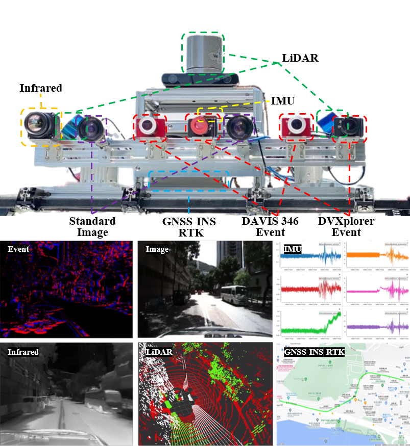

The first SLAM benchmark datasets which simultaneously satisfy the following requirements:
News
| June 1, 2023 |
UrbanDVS Benchmark goes live!
|
Citation
Please cite the following publication when using this benchmark in an academic context:
-
UrbanDVS: An Event-Centric Multisensory Dataset for Urban Driving Scenarios
P. Chen, W. Guan, F. Huang, Y. Zhong, W. Wen, L. Hsu, and P. Lu
xxxx 2023
Leveraging multiple sensors enhances complex environmental perception and increases resilience to varying luminance conditions and high-speed motion patterns, achieving precise localization and mapping.
This paper presents, UrbanDVS, an event-centric multisensory dataset comprising xx sequences and covering xx km of urban driving scenarios.
UrbanDVS provides data from two sets of stereo event cameras with different resolutions (640x480, 346x260), stereo RGB cameras, an infrared camera, a top-installed mechanical LiDAR with two slanted LiDAR, three consumer-level GNSS receivers, and a highly accurate IMU.
Meanwhile, we utilize a centimeter-level positioning system, GNSS-INS-RTK navigation system, to attain accurate ground truth of the vehicle.
All sensors are well-calibrated and temporally synchronized at the hardware level, with recording data simultaneously.
Acknowledgement
This work was supported by General Research Fund under Grant 17204222, and in part by the Seed Fund for Collaborative Research and General Funding Scheme-HKU-TCL Joint Research Center for Artificial Intelligence.